선생님이 단계를 열면 모든 학생 휴대폰에 같은 작품이 뜹니다. 학생이 찍은 관찰 핀, 찾아낸 근거, 해석과 판단이 그 자리에서 교실 칠판에 모여 한 반의 미술 비평이 됩니다.
학생 주소 geurim-tamjeong-msq5z.web.app · 로그인 없이 반·번호·이름만 입력
미술 감상은 정답 맞히기도, 느낌 한마디도 아닙니다. 보이는 것에서 출발해 근거를 쌓아 가는 생각의 과정입니다. 그 과정을 교실 전체가 함께 걷도록 만들었습니다.
"예뻐요, 멋있어요"
펠드먼 비평 4단계를 그대로 화면 순서로 만들었습니다. 느낌 말은 1단계에서 잠시 참고, 그림 속 증거부터 찾게 합니다.
손 드는 몇 명만 말하는 시간
모든 학생의 관찰 핀과 문장이 칠판에 실시간으로 모입니다. 조용한 학생의 좋은 문장도 선생님이 골라 반 전체 화면에 띄울 수 있습니다.
정답을 맞히는 해석
작품마다 답을 암시하던 질문을 없애고, 모든 작품에 통하는 열린 발문과 세 가지 해석 렌즈를 줍니다. 예시 문장도 다른 그림으로 보여 줘서 베낄 수 없습니다.
선생님 기기 한 대를 TV에 연결하고, 학생은 각자 휴대폰이나 태블릿으로 들어옵니다.
칠판에서 ▶ 다음을 누르면 모든 학생 화면이 같은 단계로 넘어갑니다.
그림에 핀을 찍고, 조형 원리를 고르고, 근거 문장을 씁니다.
핀 지도, 응답 막대, 렌즈 막대, 가치 판단 순위가 제출 즉시 그려집니다.
R 로 답을 펼치고, 좋은 문장을 눌러 반 전체 휴대폰에 띄웁니다.
띄운 문장을 함께 읽고 다음 단계로. 늦은 학생은 앞 단계 탭으로 돌아가 마저 제출합니다.
✶ 경험치(XP)와 레벨, 마지막 인증 도장까지 — 비평 과정이 한 편의 게임처럼 이어집니다 ✶
김홍도 〈씨름〉 차시 화면입니다. 학생 화면(휴대폰)과 교사 칠판(TV)을 함께 보여 드립니다. 화면 속 학생 이름과 답은 모두 가상 데이터입니다.
느낌 말은 잠깐 참아요!
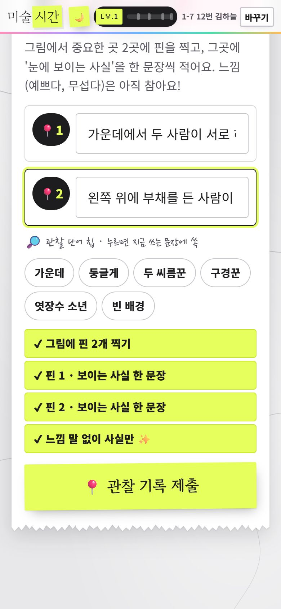
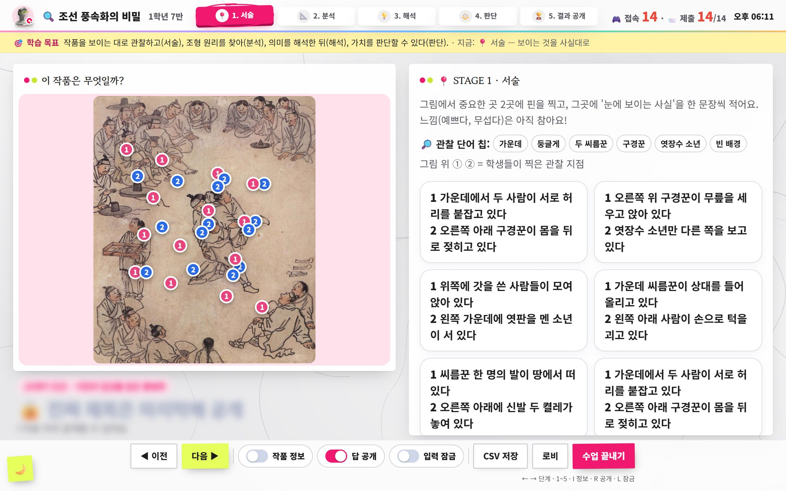
칠판 — 우리 반 핀 지도
고른 말 말고, 그림 속 위치와 모습으로!
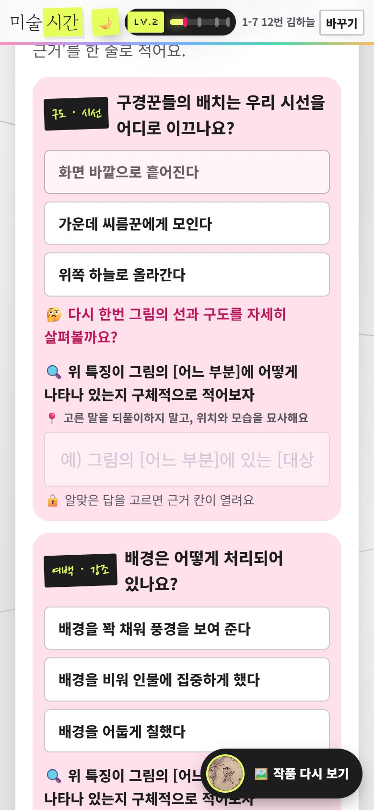
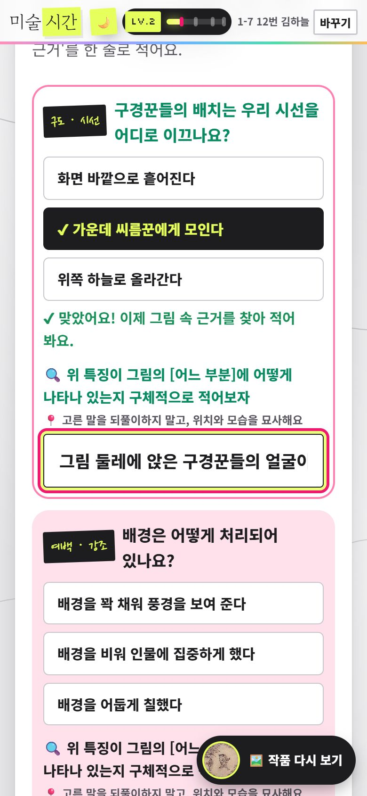
정답은 없어요, 근거만 있으면!
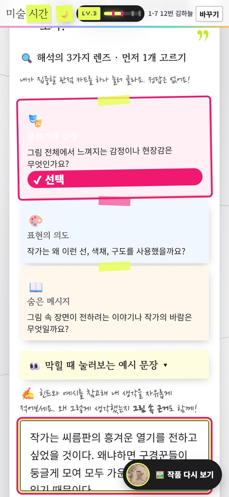
누르면 반 전체 화면에 📢 스포트라이트
이 작품은 왜 가치 있을까?
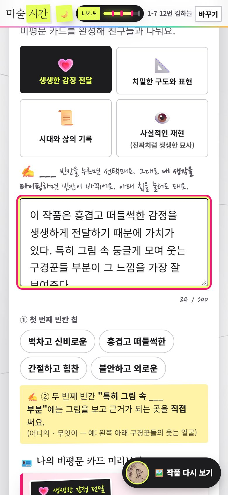
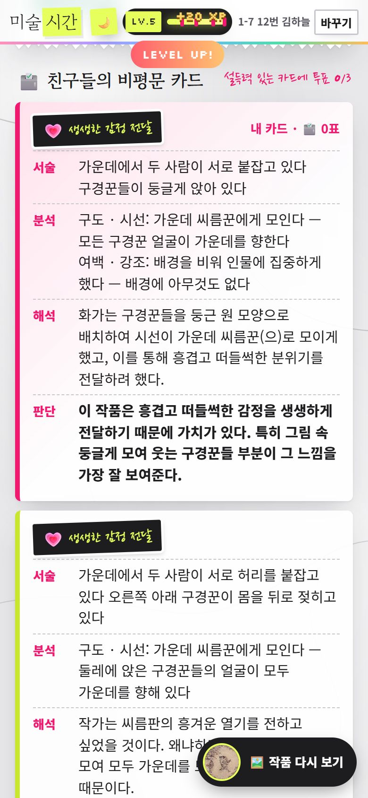
마지막에 밝혀지는 작품의 정체
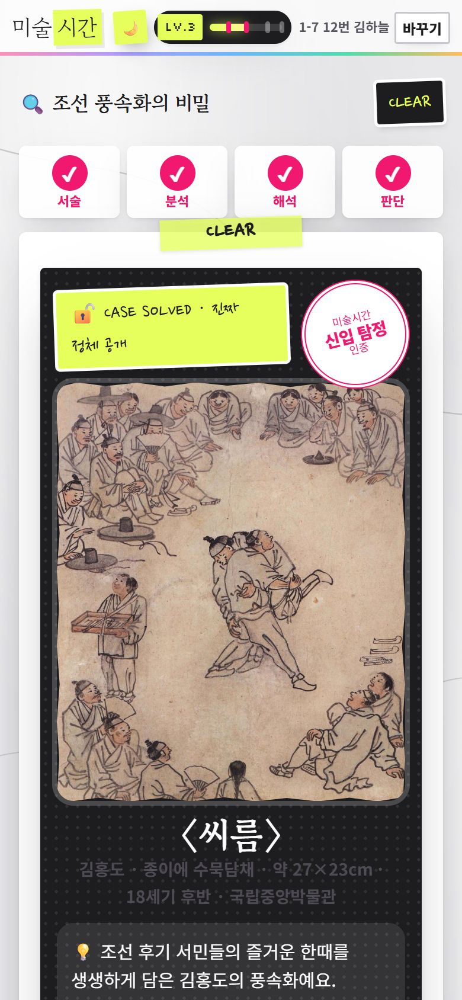
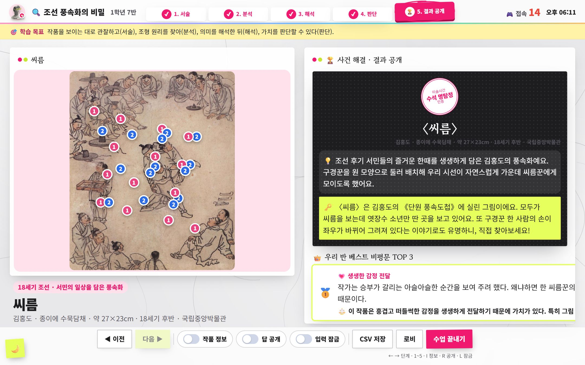
선사 시대부터 인상주의까지, 서로 다른 시대의 명작을 같은 4단계로 읽습니다. 표현 단원은 여러 주에 걸친 실기 수업을 이어서 진행합니다.
라스코의 들소들
감상 · 4단계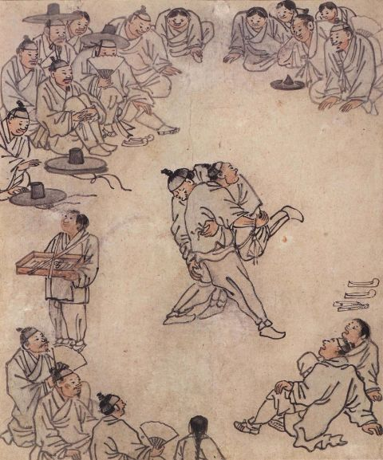
김홍도 〈씨름〉
감상 · 4단계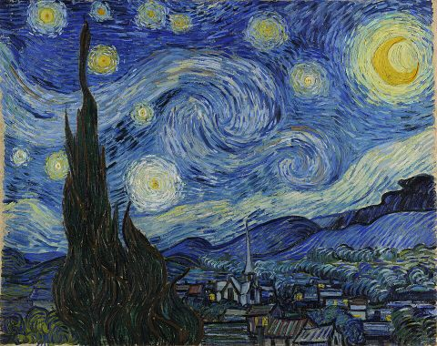
고흐 〈별이 빛나는 밤〉
감상 · 4단계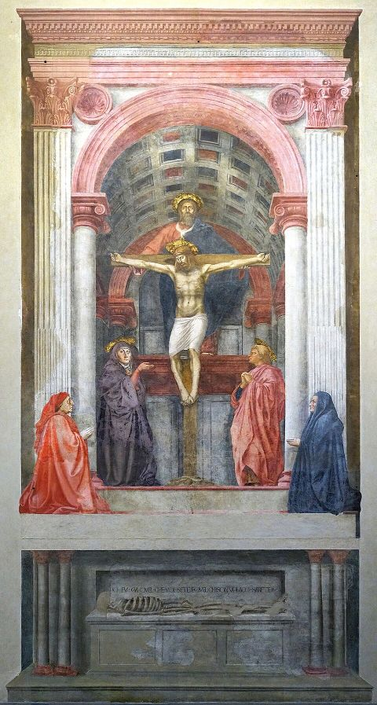
마사초 〈성 삼위일체〉
감상 · 4단계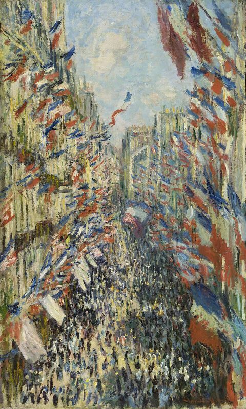
모네 〈몽토르게이 거리〉
감상 · 4단계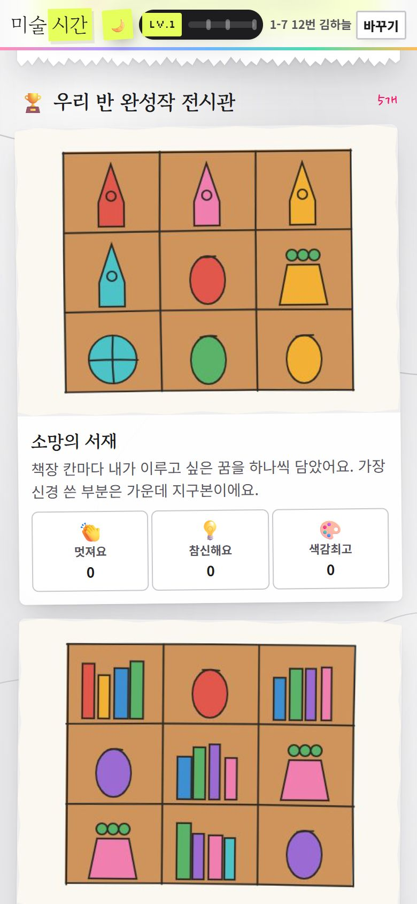
스케치 → 제작 → 전시
표현 · 3탭융합 단원 · 준비 중
융합artworks.js에, 새 차시는 curriculum.js에 한 줄만 더하면 로비 지도에 카드가 생깁니다. 관찰 칩·분석 질문을 작품마다 바꿀 수 있습니다.실기 수업은 몇 주에 걸쳐 이어집니다. 같은 반에서 다시 열면 지난 시간 게시물이 그대로 이어집니다.
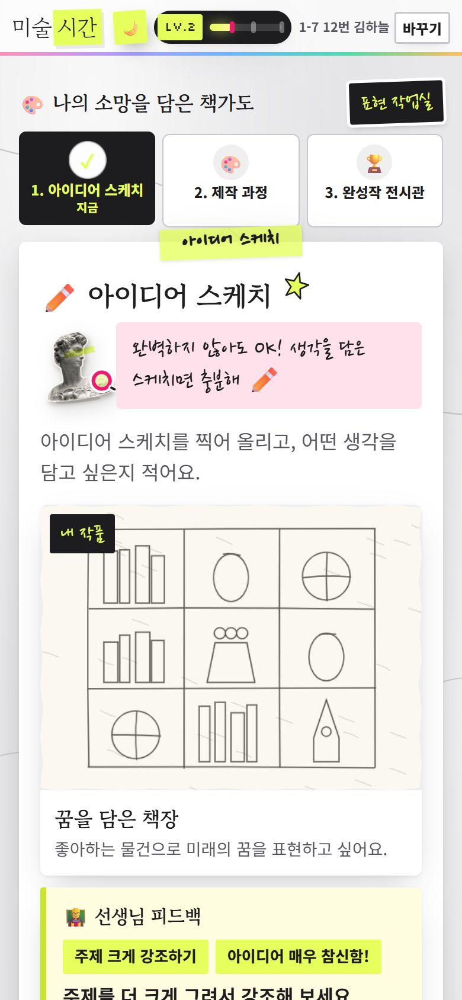
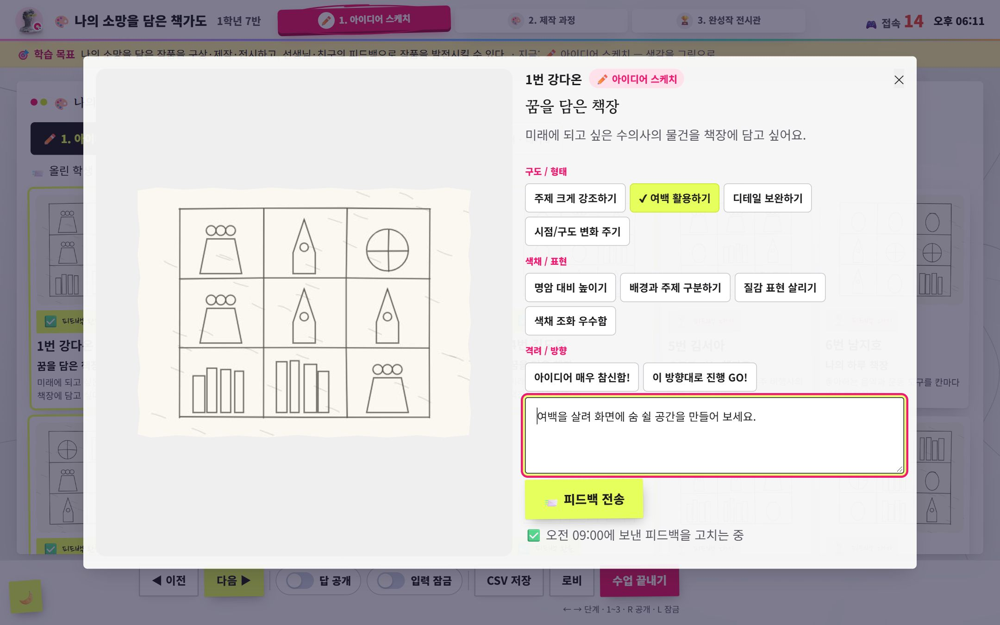
원터치 피드백 — 키워드를 누르면 문장이 채워져요
교사 화면은 프로젝터·TV용 칠판으로 설계했습니다. 수업 중에는 키보드 단축키만으로 진행할 수 있습니다.
수업을 열면 칠판에 QR과 접속한 학생 번호판이 뜹니다. 학생은 찍고 바로 들어옵니다.
칠판 맨 위에 오늘의 학습 목표와 "지금 하는 일"이 늘 보입니다.
← → 단계 이동 · R 답 공개 · L 입력 잠금 · I 작품 정보 공개
좋은 답을 누르면 이름 없이 모든 학생 화면에 카드로 뜹니다. 뽑힌 학생 화면에만 "내 답이에요! 🎉"
제출 인원, 분석 응답 막대, 렌즈 막대, 가치 판단 비율과 비평문 순위가 즉시 갱신됩니다.
반 전체 답과 피드백을 CSV로 내려받고, 지난 수업은 이어서 열거나 삭제할 수 있습니다.
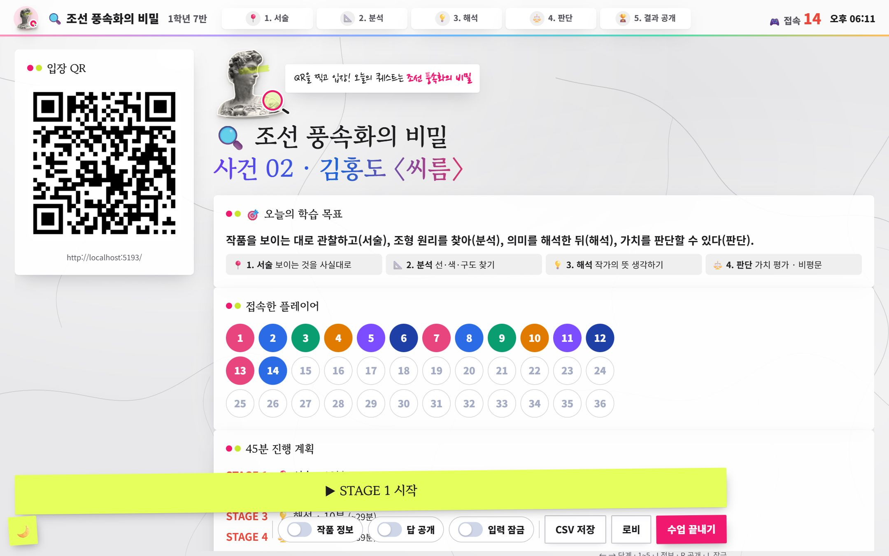
수업 시작 화면 — QR · 학습 목표 · 45분 진행 계획
회원가입·로그인 없이 반·번호·이름만 씁니다. 칠판과 스포트라이트에는 이름이 나오지 않습니다.
답을 암시하는 질문·키워드를 없애고, 예시는 다른 그림으로 보여 줍니다.
'ㅋㅋㅋ', 'ㅇㄴㄷㄱ'처럼 자음·모음만 있거나 뜻 없는 글자는 제출되지 않고 "완성된 한글 문장으로 적어주세요"가 뜹니다.
선생님이 넘기면 모두 함께 넘어가고, 놓친 단계는 탭으로 돌아가 마저 냅니다. 선생님이 열지 않은 단계는 잠겨 있습니다.
AI 자동 채점을 쓰지 않습니다. 피드백은 선생님이 직접 보냅니다.
답 내보내기와 수업 삭제는 교사 PIN으로 로그인한 기기에서만 할 수 있습니다.
geurim-tamjeong-msq5z.web.app
인터넷 브라우저만 있으면 됩니다. 학생은 휴대폰·태블릿·노트북 모두 가능하고, 교사는 노트북을 TV나 프로젝터에 연결해 씁니다. 앱 설치는 필요 없습니다.
아니요. 처음 한 번 학년·반·번호·이름을 고르면 그 기기에 기억되고, 선생님이 수업을 열면 자동으로 입장합니다.
칠판에 모이는 학생 답과 스포트라이트에는 이름이 나오지 않습니다. 선생님이 R 키로 답을 공개하기 전까지는 내용도 흐리게 가려져 있습니다.
선생님이 다음 단계로 넘기면 모든 학생이 함께 넘어갑니다. 못 낸 단계는 점선 표시가 되어, 탭을 눌러 돌아가 늦게라도 낼 수 있습니다.
네. 수업 기록은 서버에 남아 있어 로비의 '최근 수업'에서 이어서 열 수 있습니다. '수업 끝내기'를 누르면 학생 화면은 대기 로비로 돌아갑니다.
작품 이미지와 관찰 칩·분석 질문·비하인드 스토리를 작품 데이터 파일에 추가하면 됩니다. 차시 목록에 한 줄을 더하면 로비 지도에 새 카드가 생깁니다.